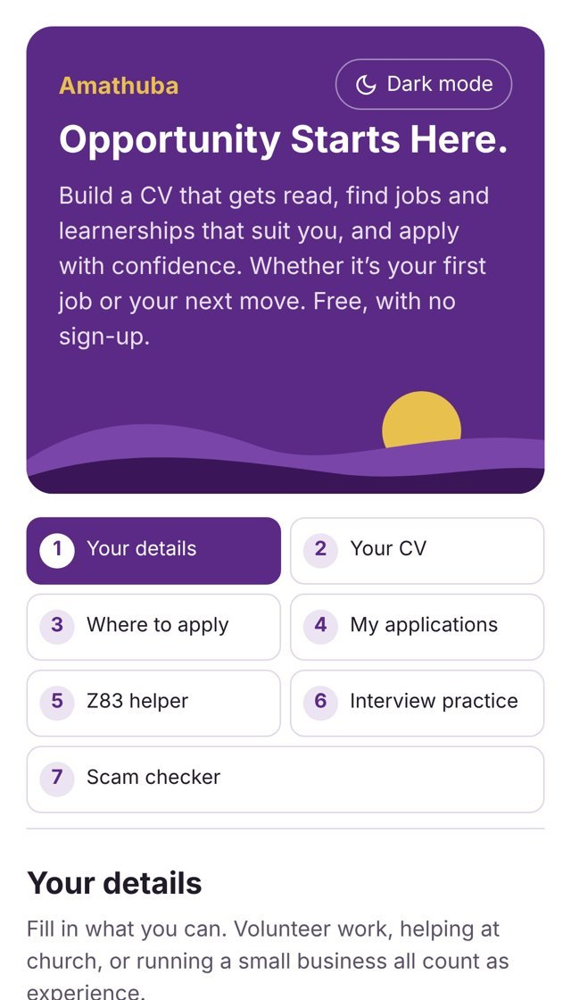

Amathuba
A free app that helps job seekers build a CV, find opportunities that match them, fill in the Z83 for government jobs and avoid scams.
Onele Foundation helps young people from Lusikisiki, and across South Africa, take their next step: their first job, a better job, or a strong start in learning.
Onele Foundation was started by Onele Nongindzi, a software developer who grew up in Lusikisiki in the Eastern Cape.
Back home, she saw capable young people miss out on work for reasons that are easy to fix: a CV employers’ systems could not read, a Z83 form filled in on the wrong version, an opportunity nobody told them about, or a fake job advert asking for money they did not have.
So she started building the tools and support she wished they had, free of charge, and designed for the phones and data people really have.
Nearly half of young South Africans who want work cannot find it. We cannot fix that alone, but we can make sure no one misses an opportunity because of a CV, a form or a scam. Onele Nongindzi, founder
To empower unemployed South Africans through accessible career resources, tools, skills and opportunities.
A South Africa where employment support and new skills are within everyone’s reach, regardless of financial circumstances.
Essential job-seeker services will always stay free. Over the long term, we aim to:
Three programmes, one goal: helping people from every starting point move forward.
A free app that helps job seekers build a CV, find opportunities that match them, fill in the Z83 for government jobs and avoid scams.
A safe, registered early childhood development centre in Lusikisiki, giving children a strong start and parents the chance to work.
In-person CV and Z83 workshops with schools, TVET colleges and community groups, and a digital help corner with computers, printing and data.
Amathuba (“opportunities” in isiXhosa and isiZulu) serves the person looking for their very first job as fully as the professional ready for their next move.
It is free, needs no sign-up, and keeps people’s details on their own phones.
Open Amathuba
Our job-seeker services will always be free. Partners and supporters make that possible.
Help keep Amathuba free and growing, and show your company’s support for youth employment.
Schools, TVET colleges, municipalities and community groups: bring a CV and Z83 workshop to your learners or members.
Employers and recruiters: tell us about jobs, learnerships and internships, and we will share checked opportunities with job seekers.
Help at workshops, test the app, or share Amathuba with someone who is looking for work.
Whether you want to partner, sponsor, volunteer or simply learn more, we would love to hear from you.
Based in Lusikisiki, OR Tambo District, Eastern Cape, South Africa.